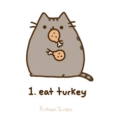
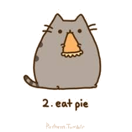

Day 46

Reading
- Now that you've finished To Kill a Mockingbird, take this short quiz.
- New reading: Bulfinch's Mythology by Thomas Bulfinch.
- Today, read Chapters I - IV (1 - 4) on pp. 11-44. You don't have to read the Preface pages.
Writing
- Pick a prompt 642 Things to Write About notebook.
- Write a page based on this topic on a separate sheet of paper or in a Microsoft document.
Words of the Day:
It's Thanksgiving week! Write the words, names or phrases below in your vocabulary book along with their short definitions. Also, click on the link for each word, and read more about the definition.
- cranberry sauce - sauce made of cranberries and sugar
- Edward Winslow - English colonial administrator who traveled to America on the Mayflower and served as the first governor of the Plymouth Colony (1595-1655)
- feast - a ceremonial dinner party for many people
- give thanks - express gratitude or show appreciation to
- Indian corn - tall annual cereal grass bearing kernels on large ears: widely cultivated in America in many varieties; the principal cereal in Mexico and Central and South America since pre-Columbian times
- Massachusetts Bay Colony - one of the British colonies that formed the United States
- Massasoit - Wampanoag leader who aided the Pilgrims (1580-1661)
- Mayflower - the ship in which the Pilgrim Fathers sailed from England to Massachusetts in 1620
- melting pot - an environment in which groups are socially assimilated
- Native American - of or pertaining to American Indians or their culture or languages
Grammar
- Interjections are words of protest, command, or excitement. They can stand alone as a sentence with a punctuation mark, or they can be followed by a comma or in a longer sentence.
- Examples:
- Stop! This isn't the right movie theater.
- Oh no, my sandwich is soggy.
- Practice: Brain Quest, p. 34 - Uh-oh! Vampire Bunnies!
- Conjunctions link words, phrases, and or clauses. They can also link sentences to make a compound sentence.
- Examples:
- Jane and Mike went to the mall.
- The wind was howling, but I didn't care.
- Practice: Brain Quest, p. 35 - The Pizza Shop
Math
- Complete: Division Practice I. There are 20 questions.
- Do not try to do these problems in your head! Pause and write down each problem in your notebook, solve, and then type in your answer. There are no remainders.
- Word Problems: Brain Quest, p. 224 - The Big Apple
Day 47

Reading
- Continue reading Bulfinch's Mythology by Thomas Bulfinch.
- Today, read Chapters V - IX (5 - 9) on pp. 45-77.
Words of the Day:
Write the words, names or phrases below in your vocabulary book along with their short definitions. Also, click on the link for each word, and read more about the definition.
- pilgrim - someone who journeys in foreign lands
- Plymouth - a town in Massachusetts founded by Pilgrims in 1620
- Plymouth Colony - colony formed by the Pilgrims when they arrived at Plymouth Rock in 1620; it was absorbed into the Massachusetts Bay Colony in 1691
- Plymouth Rock - a boulder in Plymouth supposed to be where the Pilgrims disembarked from the Mayflower
- pumpkin pie - pie made of mashed pumpkin, milk, eggs, and sugar
- stuffing - padding put in mattresses and cushions and upholstered furniture; a mixture of seasoned ingredients used to stuff meats and vegetables
- sweet corn - a corn plant developed in order to have young ears that are sweet and suitable for eating
- Thanksgiving Day - fourth Thursday in November in the United States; second Monday in October in Canada; commemorates a feast held in 1621 by the Pilgrims and the Wampanoag
- turkey - large gallinaceous (domestic poultry and game) bird with fan-shaped tail
- Wampanoag - a member of the Algonquian people of Rhode Island and Massachusetts who greeted the Pilgrims
Writing
Write a page on the following topic: What is something you want to learn to do? Explain what you would like to learn and why.
Math
- Complete: Division Practice II. There are 20 questions.
- Do not try to do these problems in your head! Pause and write down each problem in your notebook, solve, and then type in your answer. There are no remainders.
- Word Problems: Brain Quest, p. 225 - The Legend of Zero
Social Studies
- Visit this site to learn more about the presidents of the United States.
- This week, learn about the seventeeth (Andrew Johnson) through the twentieth president (James Garfield) only.
- A copy of the text for each president is in your folder.
Day 48
History
- Watch this video on the Pilgrims' journey.
- Summary: Some 100 people, many of them seeking religious freedom in the New World, set sail from England on the Mayflower in September 1620. That November, the ship landed on the shores of Cape Cod, in present-day Massachusetts. A scouting party was sent out, and in late December the group landed at Plymouth Harbor, where they would form the first permanent settlement of Europeans in New England. These original settlers of Plymouth Colony are known as the Pilgrim Fathers or simply as the Pilgrims.
Art